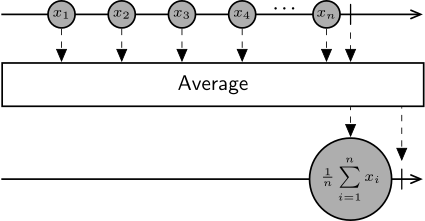

Class Average
Represents an operator that computes the numerical average of an observable sequence.

The Average operator collects all the values from the source sequence and emits a single floating-point number representing their arithmetic mean. The single result value is emitted only when the source sequence terminates successfully.
[Combinator]
public class Average- Inheritance
-
Average
- Inherited Members
Methods
Process(IObservable<decimal>)
Computes the average of an observable sequence of decimal values.
public IObservable<decimal> Process(IObservable<decimal> source)Parameters
sourceIObservable<decimal>A sequence of decimal values to calculate the average of.
Returns
- IObservable<decimal>
An observable sequence containing a single element representing the average of the sequence of values.
Process(IObservable<double>)
Computes the average of an observable sequence of double values.
public IObservable<double> Process(IObservable<double> source)Parameters
sourceIObservable<double>A sequence of double values to calculate the average of.
Returns
- IObservable<double>
An observable sequence containing a single element representing the average of the sequence of values.
Process(IObservable<int>)
Computes the average of an observable sequence of int values.
public IObservable<double> Process(IObservable<int> source)Parameters
sourceIObservable<int>A sequence of int values to calculate the average of.
Returns
- IObservable<double>
An observable sequence containing a single element representing the average of the sequence of values.
Process(IObservable<long>)
Computes the average of an observable sequence of long values.
public IObservable<double> Process(IObservable<long> source)Parameters
sourceIObservable<long>A sequence of long values to calculate the average of.
Returns
- IObservable<double>
An observable sequence containing a single element representing the average of the sequence of values.
Process(IObservable<decimal?>)
Computes the average of an observable sequence of nullable decimal values.
public IObservable<decimal?> Process(IObservable<decimal?> source)Parameters
sourceIObservable<decimal?>A sequence of decimal values to calculate the average of.
Returns
- IObservable<decimal?>
An observable sequence containing a single element representing the average of the sequence of values.
Process(IObservable<double?>)
Computes the average of an observable sequence of nullable double values.
public IObservable<double?> Process(IObservable<double?> source)Parameters
sourceIObservable<double?>A sequence of double values to calculate the average of.
Returns
- IObservable<double?>
An observable sequence containing a single element representing the average of the sequence of values.
Process(IObservable<int?>)
Computes the average of an observable sequence of nullable int values.
public IObservable<double?> Process(IObservable<int?> source)Parameters
sourceIObservable<int?>A sequence of int values to calculate the average of.
Returns
- IObservable<double?>
An observable sequence containing a single element representing the average of the sequence of values.
Process(IObservable<long?>)
Computes the average of an observable sequence of nullable long values.
public IObservable<double?> Process(IObservable<long?> source)Parameters
sourceIObservable<long?>A sequence of long values to calculate the average of.
Returns
- IObservable<double?>
An observable sequence containing a single element representing the average of the sequence of values.
Process(IObservable<float?>)
Computes the average of an observable sequence of nullable float values.
public IObservable<float?> Process(IObservable<float?> source)Parameters
sourceIObservable<float?>A sequence of float values to calculate the average of.
Returns
- IObservable<float?>
An observable sequence containing a single element representing the average of the sequence of values.
Process(IObservable<float>)
Computes the average of an observable sequence of float values.
public IObservable<float> Process(IObservable<float> source)Parameters
sourceIObservable<float>A sequence of float values to calculate the average of.
Returns
- IObservable<float>
An observable sequence containing a single element representing the average of the sequence of values.